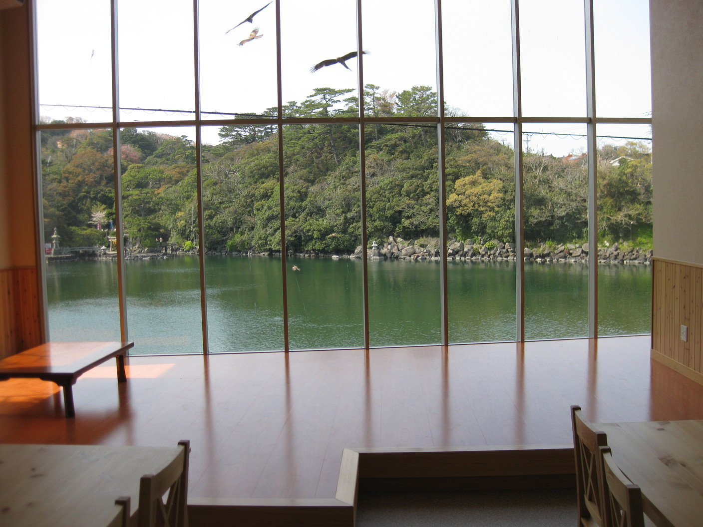
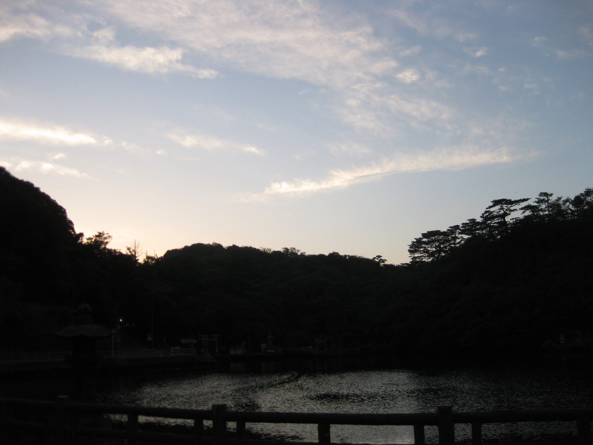
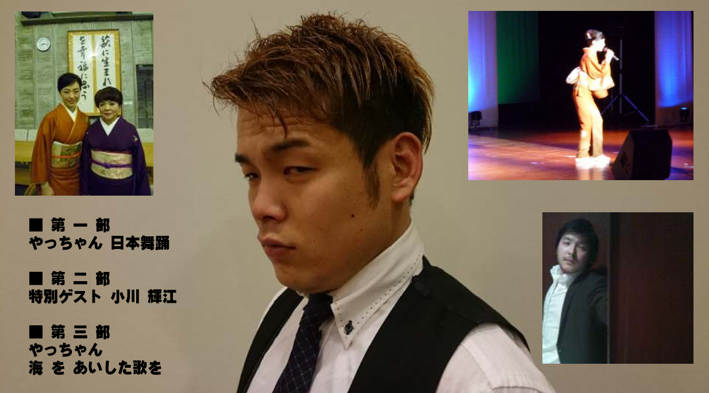
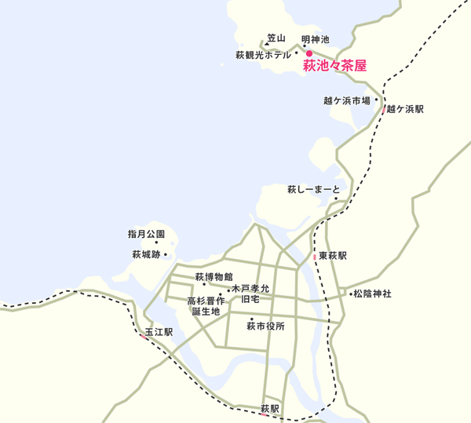
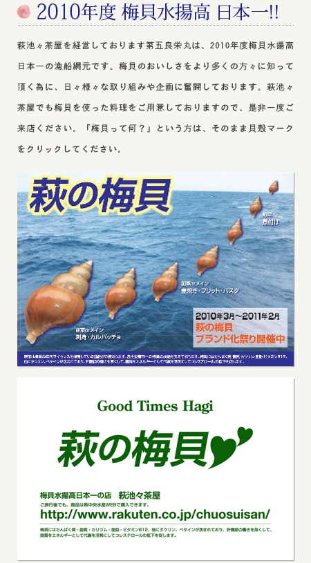

萩市 明神池眺望のイベントスペース 萩池々茶屋
明神池眺望、最大40名収容のイベントスペース! 企業系パーティーから結婚式二次会、歓送迎会、映像系、音楽系、ファッション系等々 各種イベントに幅広くご対応いたします。最近では神秘的な明神池をバックに、取材撮影やカラオケ大会、演奏会等を行っています。 カラオケは約1000曲をカバーしています。
有料駐車場：５台 大型車駐車場：２台 ※駐車料金還元クーポンをご用意しています。
夕方のバックグラウンドはこちらです
ステージ：ブランクスペース
演歌ショー
お申し込みフォームはこちら
電話番号
0838-21-7112 ご予約はこちらの番号にFAXください！
所在地
山口県萩市大字椿東6450の1 明神池入り口
道に迷われたり、お店の場所が分からない場合は、お気軽にお電話ください。

